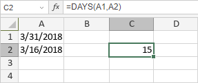

DAYS funkcija
Funkcija DAYS je jedna od funkcija za datum i vreme. Koristi se za vraćanje broja dana između dva datuma.
Sintaksa
DAYS(end_date, start_date)
Funkcija DAYS ima sledeće argumente:
| Argument | Opis |
|---|---|
| end_date | end_date i start_date su dva datuma između kojih želite da izračunate broj dana. |
| start_date | end_date i start_date su dva datuma između kojih želite da izračunate broj dana. |
Napomene
Kako primeniti funkciju DAYS.
Primeri
Slika ispod prikazuje rezultat koji vraća funkcija DAYS.
